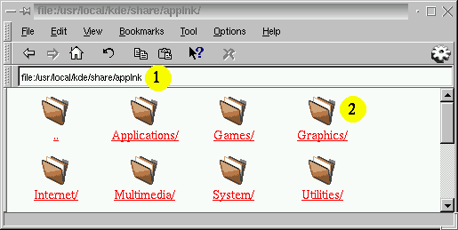
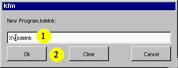
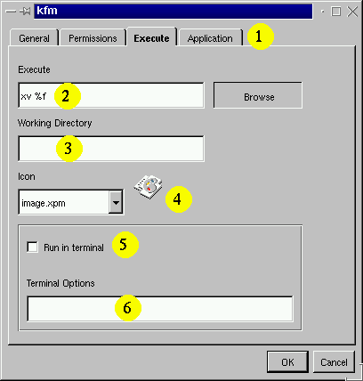
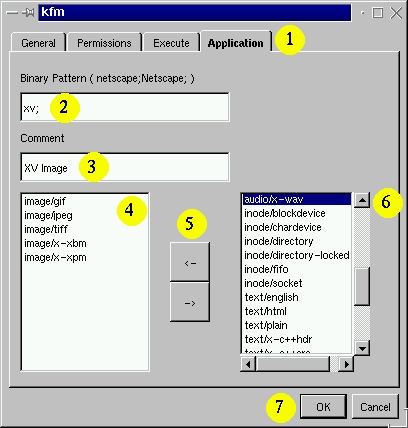

Integrating an application step by step
In this chapter I will show you how to register XV in
the K Desktop Environment. After following these steps XV will
be registered for various image data types and will be able to
load and save images from the web... you did not expect that
:-). So, here we go.
Opening a KFM super user window
I assume that you know from the previous lesson how to
open a KFM super user window. Now open the menu Edit and
select Applications. You will now be shown a
window like this one:

- Here you can see the directory we are visiting right now.
This directory tree contains all informations about registered
apps in your KDE.
- Now click on this folder, since we want to install XV
in the graphics section.
If you are logged in as super user you will find an option to edit
the global application config files, too
Please distinguish exactly between applications config files
and application config files. The first one stores configurations
written by an application during run time, while the second ones
( these are the ones we are talking about here ) contain informations
about installed applications. These config files are created during
installation of an application and dont change usually afterwards.
Creating a new application file
From the menu File open the submenu New
and select Program. You will now be prompted by
a new window:

- You must enter the applications name here followed by
the extension .kdelnk. The name you use does not need
to be the name of the binary. It may be any name but it has
to be a unique name for the app.
- Now press OK.
Opening the properties
You will now see a new icon in the window. Press the right
mosue button to open the properties menu. Now you have to fill
out a form like this one:

- Select Execute to see this form.
- Enter the command line which starts the app. This is the
same you would enter in a terminal session, but instead of
the data files, you must place a %f here. In the
hackers section of the previous chapter you will find more information
on this place holders.
- In seldom cases one needs to define a working directory for
an application. Usually this line is empty.
- Choose an icon for the application.
- Select this checkbox if the app must run in a terminal.
This is the case for pine for example.
- You may enter special special command line aarguments here which
will ba passed to the terminal ( usually kvt ).
The second form
The last step is to fill out the second form:

- Click on Application to reach this page.
- You may enter the names of binaries here. Multiple
binaries have to be separated by ;. This causes
every binary of this name to become the applications icon, too.
So this line is for better look & feel only.
- Enter a small comment in your language here. Developers must
take care that there is at least a default english comment
provided at the end.
- This list contains all mime types that this app can handle.
- Use this buttons to move mime types between the two lists.
- This list contains all registered mime types which are not
handled by the application.
- Press Ok
That is the end of the show, your application is registered now.
KFM has updated its bindings automatically, only KPanel will
need to be restarted ( System menu of kpanel ). XV should now
appear in the list of applications once you hit the right mouse
button over an image file containing one of the selected data
types. If the image is not located on your local hard disk, KFM
will download it and run XV afterwards. If the file is
modified by XV, KFM will ask you wether it should be uploaded.
It is now time for a coffee or two.